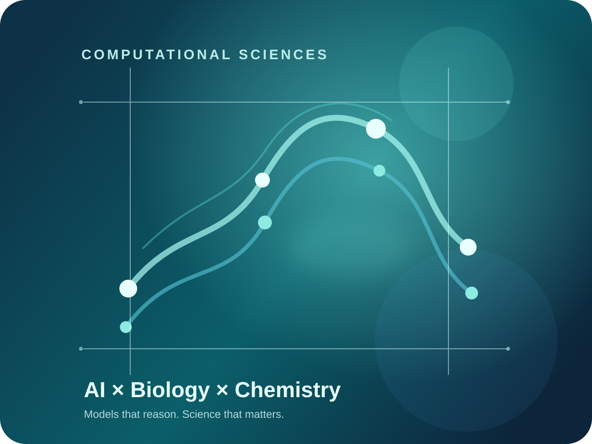
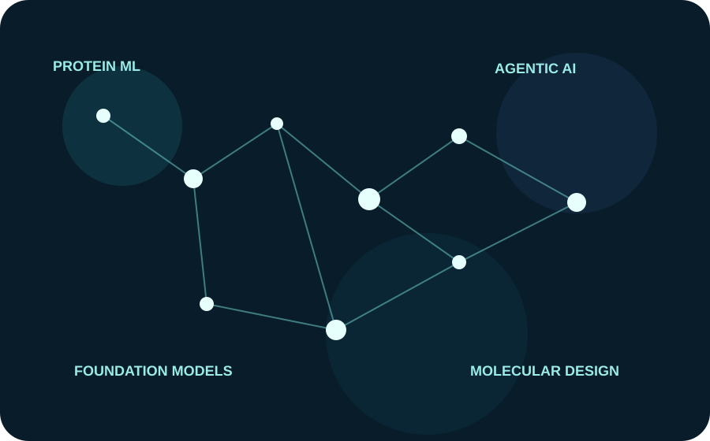

Current opportunities
Find the work that fits your expertise.
Search by specialty, title, location or requisition number.
Curated by Kevin Kannady
No roles match those filters.
Explore curated Computational Sciences opportunities where machine learning, scientific reasoning and biology converge to change how medicines are discovered.

These teams bring together machine learning, scientific reasoning, molecular design, biology, engineering and translational science. The common thread: build technology that helps scientists ask better questions and move faster toward medicines.

Search by specialty, title, location or requisition number.
“The most interesting AI work happens when the models are close enough to the science to change the questions we can ask.”
Computational Sciences Recruiter, Genentech & Roche. I connect exceptional AI/ML and computational talent with teams working across drug discovery, biology, translation and scientific machine learning.
Search by skill area, organization, location or role title.
Every listing links directly to the official Genentech/Roche posting.
Use the official posting for the current job description, requirements and application.